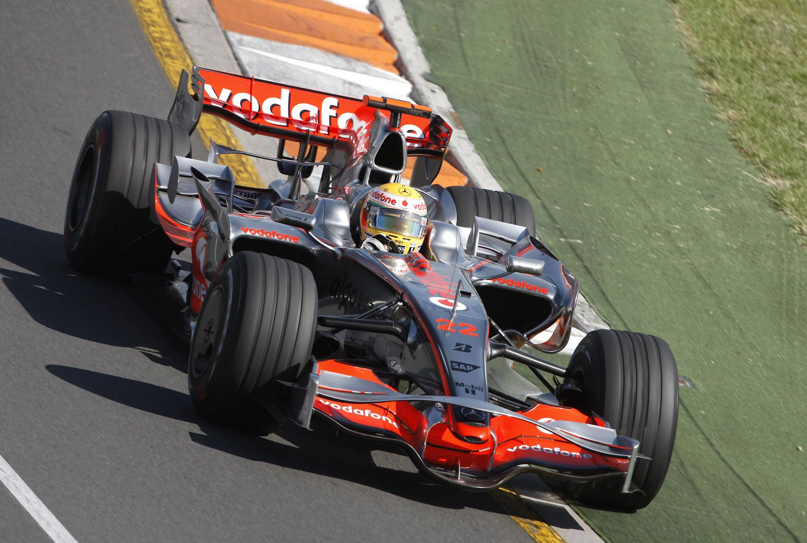

LEWIS HAMILTON
Lewis Hamilton è uno dei piloti più talentuosi e di successo nella storia della Formula 1. Nato il 7 gennaio 1985 a Stevenage, in Inghilterra, ha vinto sette titoli mondiali, eguagliando il record di Michael Schumacher. Hamilton è noto per la sua velocità, la sua abilità nel gestire le gomme e la sua capacità di adattarsi a diverse condizioni di gara. Ha iniziato la sua carriera in F1 con la McLaren nel 2007, ottenendo subito risultati impressionanti. Nel 2013, si è unito alla Mercedes, dove ha continuato a dominare il campionato. Oltre ai suoi successi in pista, Hamilton è anche un attivista per i diritti civili e la sostenibilità, utilizzando la sua piattaforma per promuovere il cambiamento sociale.
